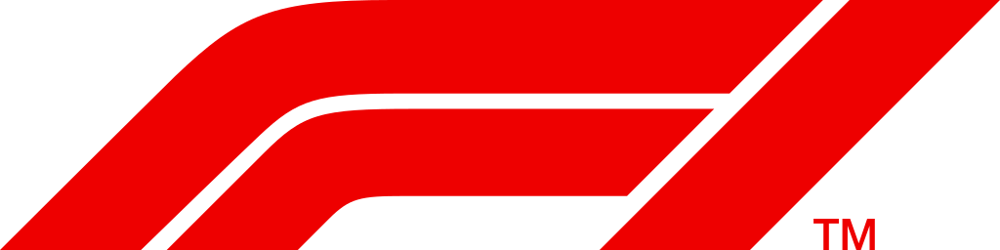

<mat-toolbar style="background-color: #322E2E;">
  <button *ngIf="!(router.url === '/login' || router.url.endsWith('/signup') || router.url.endsWith('/home'))" mat-button (click)="backClicked()" style="color: whitesmoke; margin-right: 25px;"><i class="material-icons">arrow_back</i></button>
  
<mat-menu #afterMenu="matMenu" xPosition="after" style="background-color: red;">
  <button mat-menu-item routerLink="home">Home</button>
  <button mat-menu-item routerLink="home/standing/driver">Live standing</button>
  <button mat-menu-item routerLink="home/competitions">Competitions</button>
  <button mat-menu-item routerLink="home/standing/constructor">Constructors</button>
  <!-- <button mat-menu-item routerLink="home/teams">FantaF1</button>
  <button mat-menu-item routerLink="home/teamsStanding">FantaF1 standing</button> -->
  <button mat-menu-item (click)="logout()">Logout</button>
</mat-menu>
<span style="flex: 1 1 auto;"></span>
<button mat-button [matMenuTriggerFor]="afterMenu" style="color: whitesmoke;" *ngIf="!(router.url === '/login' || router.url.endsWith('/signup'))"><mat-icon style="margin: 0%; padding: 0%;">menu</mat-icon></button>
</mat-toolbar>
